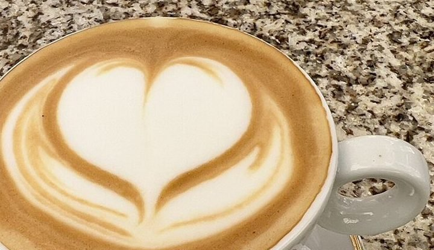
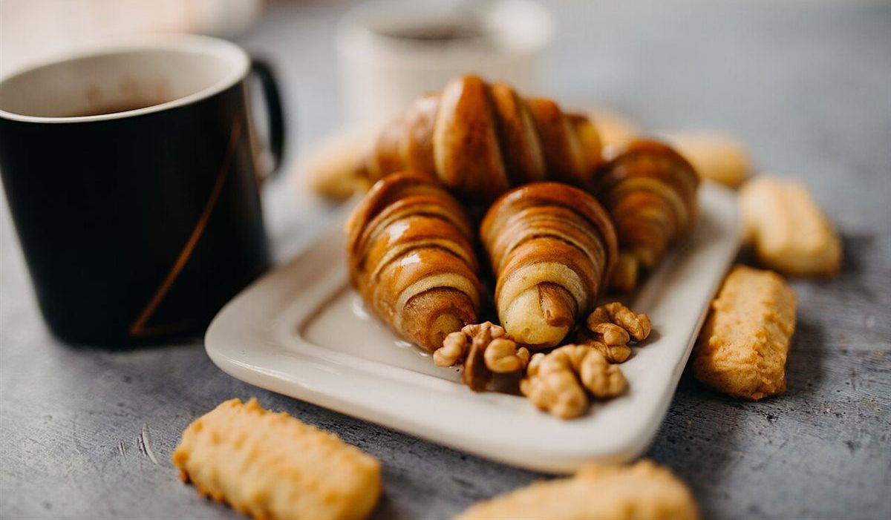
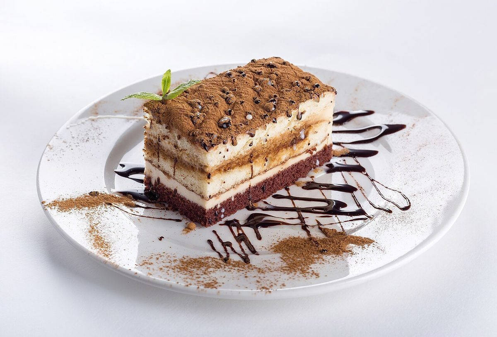
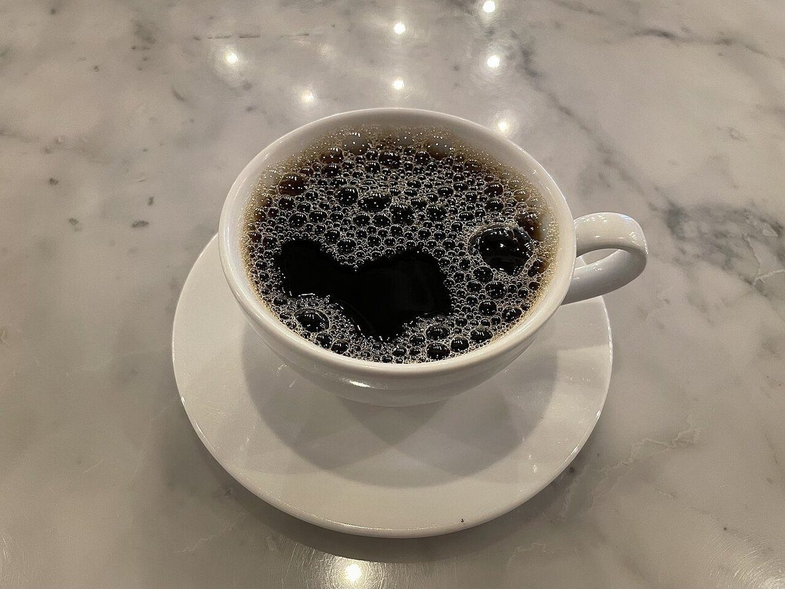
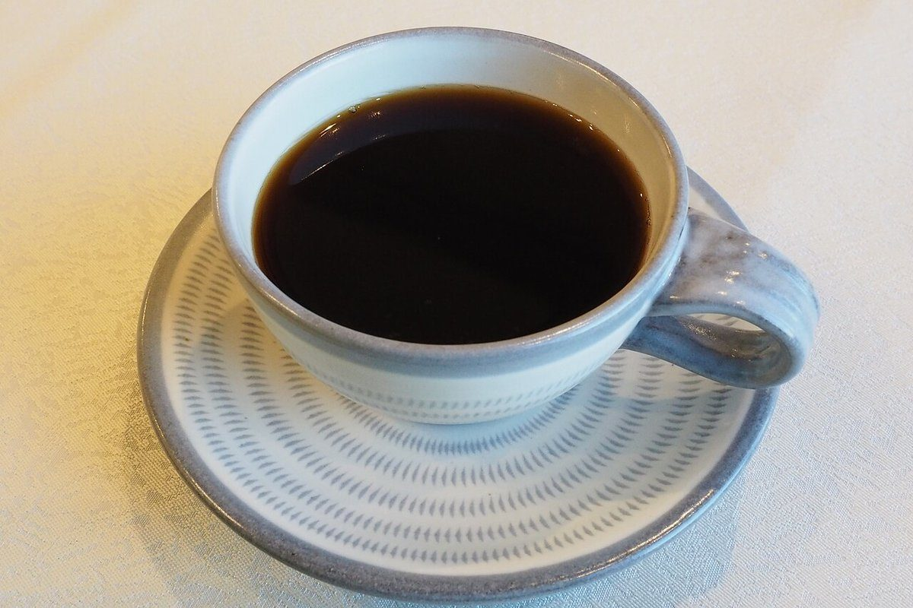

メニュー
メニューの内容・価格は準備中です。お問い合わせください。
メニュー・料金: 準備中(お問い合わせください)
詳しい内容は、お電話かInstagramでご確認ください。
以下の写真はフリー素材のイメージです。実際の提供内容とは異なります。





掲載写真はフリー素材のイメージで、店舗の実際の写真ではありません。他地域で撮影されたもの、撮影地が不明なものを含みます。
メニューの内容・価格は準備中です。お問い合わせください。
メニュー・料金: 準備中(お問い合わせください)
詳しい内容は、お電話かInstagramでご確認ください。
以下の写真はフリー素材のイメージです。実際の提供内容とは異なります。




